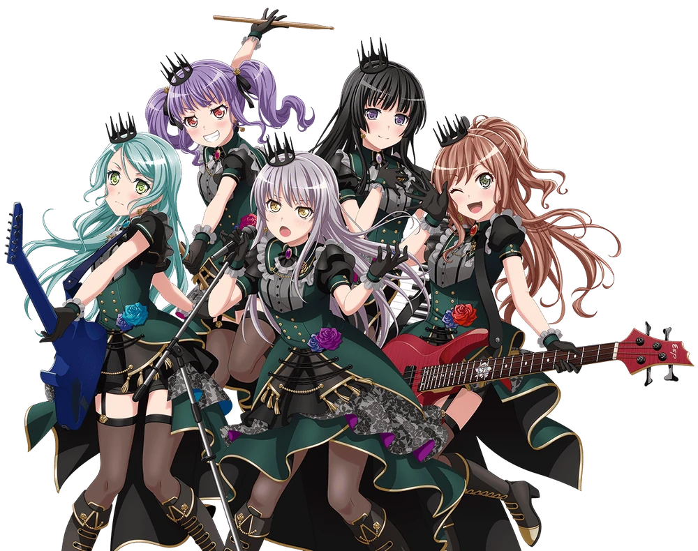

Roselia is an all-girl band in the BanG Dream! franchise. The group consists of five members, namely Minato Yukina on vocals,
Hikawa Sayo on guitar, Imai Lisa on bass, Udagawa Ako on drums, and Shirokane Rinko on keyboard. They debuted with the song BLACK SHOUT.
They're a popular gothic J-Rock band that is recognized at a near-professional level and is catching the eyes of the music industry and scouters.
Background
A highly talented band. With their skilled performances and pro-level vocals, they are a highly praised group.
Vocalist Yukina started the band with a special certain goal in mind. The other members are the like-minded Sayo (Gt.),
childhood friend Lisa (Ba.), youngest and most talented Ako (Dr.), and the award-winning Rinko (Key.).
They play at a well-known live house and hope someday to make it to the big time.
Costumes
|  | ||
 |
Each girl wears a purple and black gothic dress with the skirt in four ruffled layers, coming in
purple, dark purple, black, and white. Their tops are in various styles, but each girl wears black frilly
sleeves and a ribbon on their neck; each coming in a unique color. Yukina has violet, Sayo's is
turquoise, Ako has neon pink, Rinko has white, and Lisa has red. Each girl also wears the same
gothic hat and has a lace ribbon sewn to the side of their skirt. While Yukina, Sayo, and Lisa share
the same diagonal cut skirt design, Ako's resembles a mini-skirt, and Rinko's skirt reaches all the
way down to her ankles. They also wear rose hair clips on their heads with purple and black
feathers hanging down, with a light teal rose beside a big black rose with black and white accents.
Each girl also wears black knee-high boots with gray soles and light gold accents with dark gold
lines on top.
Songs
You can see the songs in HERE